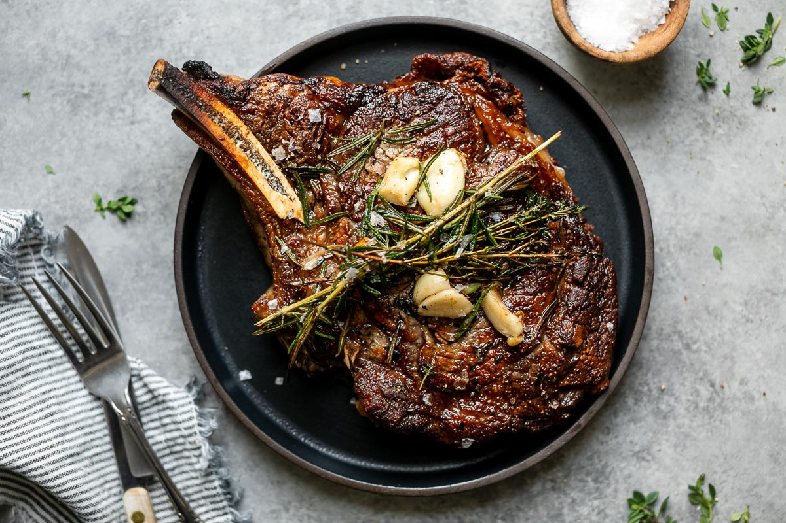

Cast Iron Steak

This easy recipe will make any delicious steak of your chosing. The ingredients are simple and you
will only need a cast iron skillet to cook it. It is a very beginner friendly option to learn how
to use a cast iron skillet.
Ingredients
- One steak of your choice
- Kosher salt & ground black peper
- 1-2 tablespoons avocado oil
- 2 tablespoons unsalted butter
- 2 cloves garlic
- 2 sprigs fresh rosemary
- 8-10 sprigs fresh thyme
Steps
- 30 minutes before cooking, remove steak from fridge and let it come up to room temperature.
During this process, coat both side of steak with kosher salt and periodically pat steak dry.
- Preheat the cast iron skillet to high heat. Let skillet get very hot.
- Add avocado oil to the skillet. Sear the steak 2-3 minutes on both sides.
- Reduce to low heat. Add butter, garlic, rosemary, and thyme to the skillet. Tilt the skillet
so that the butter pools near the bottom. Frequently bast the steak with the butter for about
30 seconds.
- Move the steak to a plate and let it rest for about 10-15 minutes.
- Cut the steak to your liking and serve. Enjoy!